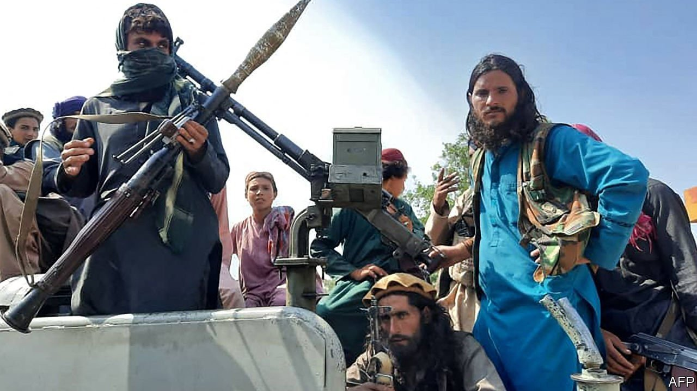
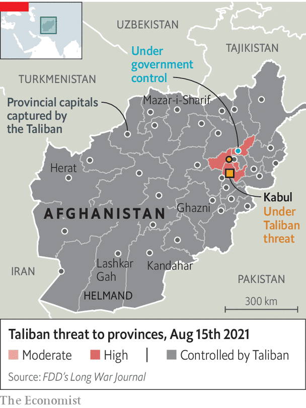

The jihadists seize Kabul, filling a vacuum Joe Biden left

IN RECENT YEARS the presidential palace in Kabul, known as the Arg, or citadel, has been an oasis of calm in a bustling, nerve-racked city. To get to it, visitors must negotiate a mile of checkpoints, staffed by increasingly well-armed Afghan army commandos. Inside the 19th-century courtyard, Afghan government officials would sip lattes from a smart cafe, surrounded by well-tended gardens, and discuss the politics outside, in the real Afghanistan. When your correspondent last visited officials from the National Security Council explained that in their view, the Taliban were weak. The only reason that they had not been defeated by Afghanistan’s American-supported army, in the view of those officials, was that the government of Afghanistan did not want to endanger civilians by going on the offensive. “They cannot win a military victory,” one official said. “Our special forces are very strong. The Taliban can only hit and run.”
On August 15th helicopters were shuttling back and forth to the Arg evacuating those same officials. A plume of smoke emerged from America’s fortress-like embassy as staff burned sensitive documents. Barely a month since President Joe Biden declared that “there’s going to be no circumstance where you see people being lifted off the roof” of the American embassy, as in Saigon in 1975, helicopters were pictured hovering above the compound, shuttling diplomats to the airport.
Meanwhile, Zabihullah Mujahid, the Taliban’s spokesman in Doha, the capital of Qatar where the militants have their diplomatic and political outfit, declared magnanimously that Taliban forces would stop their advance at the gates of the city while negotiations for surrender continued. Ashraf Ghani, the president of Afghanistan since 2014, was reported to have fled the country with his closest aides. The Afghan state, built over two decades with trillions of dollars, seems to have vanished into thin air.

How did a government with 350,000 soldiers, trained and equipped by the best armies in the world, collapse so quickly? In 1975 the North Vietnamese army, backed by a superpower, still took months to advance through South Vietnam, fighting hard for territory. The Taliban, thought to number no more than 200,000 soldiers, armed mostly with equipment they have seized from their enemies, have taken all of Afghanistan’s urban centres in little more than a week, generally without much resistance (see map). The answer seems to be that what they lacked in brawn, they made up for in brains, determination and political shrewdness. For the past year, diplomats in Doha had hoped that the Taliban could be compelled to negotiate with Mr Ghani’s government to agree to some sort of power-sharing agreement. The insurgents evidently realised it would be more profitable to negotiate with Mr Ghani’s underlings, city-by-city, and thereby simply pull the rug out from underneath him.
Hence in Herat, a jewel of a city near the Iranian border, Ismail Khan, the warlord who took the city back from the Taliban in 2001, after fighting for days, surrendered and was filmed, in captivity, pleading for “a peaceful environment”. In Kandahar, the city at the heart of Afghanistan’s southern breadbasket and the birthplace of the original Taliban, the governor was pictured handing over to his Taliban counterpart. In Jalalabad, in the east, the Taliban marched in without firing a shot, after elders in the city negotiated a surrender. Mazar-i-Sharif, a northern city which once served as a bastion of anti-Taliban resistance in the 1990s, folded in similar fashion.
In each case, the militants have made wide-ranging promises, to “forgive” those who served in the American-backed government, in exchange for surrender. In Kandahar, former soldiers who surrendered have been issued with laisser passer documents that they can show at Taliban checkpoints. There, throughout Friday night the sound of gunfire echoed throughout the city. According to residents, it was mostly fired in the air in celebration.
The Afghan army, for all its apparent strength, seems to have fallen to what might be called Yossarian syndrome, after a character in Joseph Heller’s second-world-war novel, “Catch 22”. Yossarian was asked what would happen if everyone thought as he did that fighting was pointless, and replied he would “be a damned fool to feel any other way, wouldn't I?” Similarly, the Washington Post quoted one Afghan officer explaining why his soldiers would not stop the Taliban: “Brother, if no one else fights, why should I?” Afghan military morale was not helped by the government's fiscal crisis, which has led to government staff and troops missing pay for months.
What does the Taliban takeover mean? For all their promises to show mercy in victory, few among Afghanistan’s intellectual elite are reassured. After the militants took Spin Boldak, a town on the Pakistani border that was among the first to fall in late July, credible reports emerged quickly afterwards of dozens of government supporters being massacred. In Kandahar in late July, when the militants began to take the outskirts of the city, they kidnapped Nazar Mohammad, a popular comedian, and murdered him. Reports from Kandahar say that armed Taliban have been going door to door seeking out people who worked for Western governments. In recent weeks, thousands of refugees have collected in Kabul’s parks. Hundreds have mobbed visa-processing centres, hoping for a space in the last-minute evacuations being organised by Western powers.
The Taliban’s political arm in Doha has claimed that they are no longer the bloody theocrats who ruled Afghanistan from 1996 to 2001, when accused criminals were publicly executed at Kabul’s football grounds, including women who were stoned to death for adultery. Their negotiators have stressed that there is no rule in Islam against the education of women, for example. Yet the disconnect between statements made from Qatar and what is being done by Taliban commanders in Afghanistan is now canyon-sized. In Herat, where 60% of the students at the university were women, they have reportedly already been ordered back to their homes. Female employees have been told to give up their jobs to male relatives. On the education of girls one Taliban commander, interviewed by the BBC, was crystal clear. “Not a single girl has gone to school in our village and our district… the facilities do not exist and we wouldn’t allow it anyway.”
Even the best possible outcome, where the Taliban’s leadership decides to show it is serious about reform, looks bleak. For sure, Afghanistan’s government has made only fitful progress in raising the quality of life for ordinary Afghans, even in cities, where it has had far more control than in the countryside. Its corruption has been deep and galling, and no doubt part of the reason the Taliban were able to conquer the country so effectively. Footage of Taliban soldiers walking through the opulent interiors of the captured house of Abdul Rashid Dostum, a warlord and former vice-president, who is said to have fled to Uzbekistan, underline the rottenness of the state. And yet, buoyed by a tsunami of aid money, the government did educate people, and few Afghans starved. As embassies close and foreigners flee, the aid that has sustained the country’s economy, and helped to educate its children, including girls, will now surely dry up. A humanitarian catastrophe could quickly follow.
The humiliation of America and its Western allies could hardly be more severe. Once the evacuation of their nationals—and of those few Afghan workers lucky enough to get a ticket out—is over, Western governments will have little choice but to accept that the Taliban are in power. In the late 1990s, the Taliban government was recognised by only a handful of countries, notably Pakistan and Saudi Arabia. Back then, the anti-Taliban Northern Alliance, a collection of militia concentrated in Afghanistan’s north, held out against the Taliban; this time round, the group was savvy enough to knock out the north first. Today Taliban officials have already met with diplomats from several other powers. In late July a delegation of Talibs met China’s foreign minister. Russia’s embassy has declared that it will not evacuate from Kabul. The European Union has promised to “isolate” the new government if they seize power through violence. That seems less and less credible by the minute.
Editor's note (August 15th 2021): Several details of this article have been corrected and updated since publication.